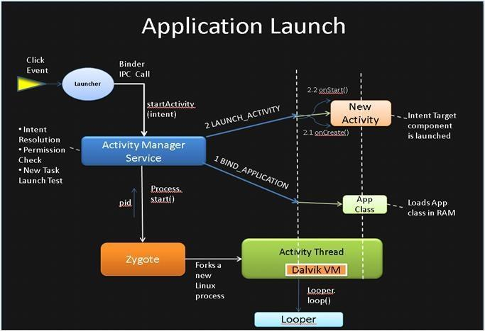
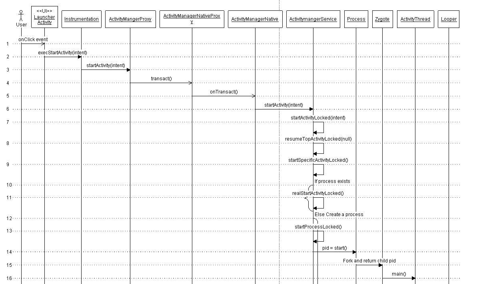
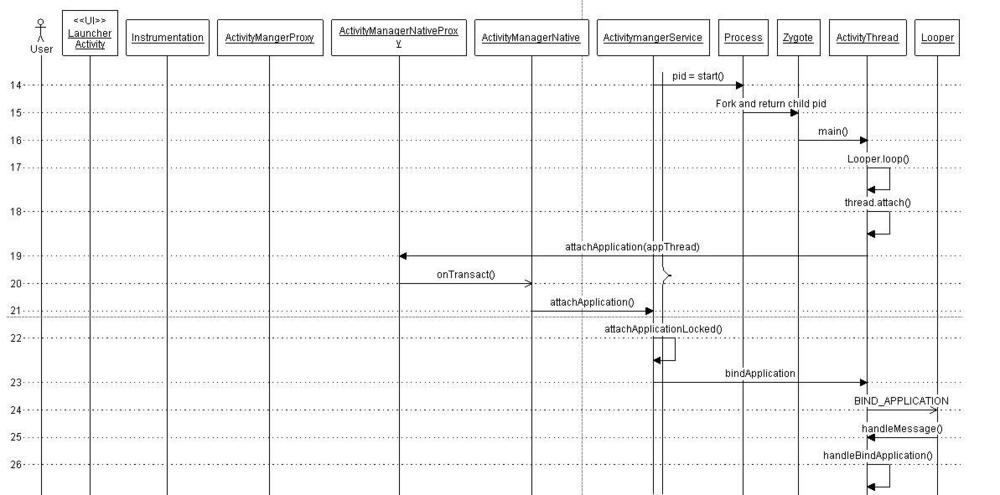
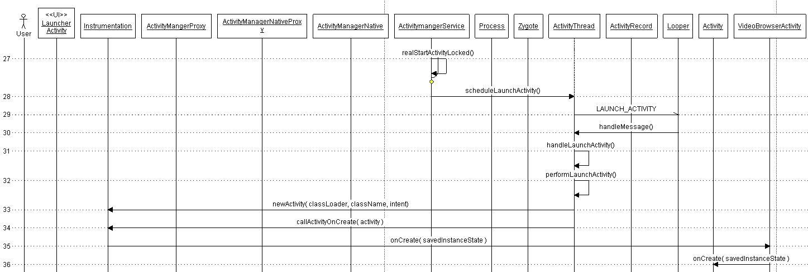

Android-Application启动流程分析
来自于国外博客的译文，原文地址：Android-Application启动流程分析
基础理论
- 每个Android App都在一个独立空间里, 意味着其运行在一个单独的进程中, 拥有自己的VM, 被系统分配一个唯一的user ID.
- Android App由很多不同组件组成, 这些组件还可以启动其他App的组件. 因此, Android App并没有一个类似程序入口的main()方法.
四大组件：
- Activities: 前台界面, 直接面向User, 提供UI和操作.
- Services: 后台任务.
- Broadcast Receivers: 广播接收者.
- Contexnt Providers: 数据提供者.
Android进程与Linux进程一样. 默认情况下, 每个apk运行在自己的Linux进程中. 另外, 默认一个进程里面只有一个线程—-主线程. 这个主线程中有一个Looper实例, 通过调用Looper.loop()从Message队列里面取出Message来做相应的处理.
系统启动过程
首先, 让我们快速看下 Android 启动流程. 与众多基于 Linux 内核的系统类似, 启动系统时, bootloader 启动内核和 init 进程. init 进程分裂出更多名为”daemons(守护进程)”的底层的 Linux 进程, 诸如android debug deamon, USB deamon等. 这些守护进程处理底层硬件相关的接口.
随后, init进程会启动一个非常有意思的进程—-“Zygote“. 顾名思义, 这是一个Android平台的非常基础的进程. 这个进程初始化了第一个VM, 并且预加载了framework和众多App所需要的通用资源. 然后它开启一个Socket接口来监听请求, 根据请求孵化出新的VM来管理新的App进程. 一旦收到新的请求, Zygote会基于自身预先加载的VM来孵化出一个新的VM创建一个新的进程.
启动Zygote之后, init进程会启动runtime进程. Zygote会孵化出一个超级管理进程—-System Server. SystemServer会启动所有系统核心服务, 例如Activity Manager Service, 硬件相关的Service等. 到此, 系统准备好启动它的第一个App进程—-Home进程了.
APP启动过程

Click事件会调用startActivity(Intent), 会通过Binder IPC机制, 最终调用到ActivityManagerService. 该Service会执行如下操作:
- 第一步通过PackageManager的resolveIntent()收集这个intent对象的指向信息.指向信息被存储在一个intent对象中.
- 下面重要的一步是通过grantUriPermissionLocked()方法来验证用户是否有足够的权限去调用该intent对象指向的Activity.
- 如果有权限, ActivityManagerService会检查并在新的task中启动目标activity.
- 现在, 是时候检查这个进程的ProcessRecord是否存在了.
如果ProcessRecord是null, ActivityManagerService会创建新的进程来实例化目标activity.
进程创建
ActivityManagerService调用startProcessLocked()方法来创建新的进程, 该方法会通过前面讲到的socket通道传递参数给Zygote进程. Zygote孵化自身, 并调用ZygoteInit.main()方法来实例化ActivityThread对象并最终返回新进程的pid.
ActivityThread随后依次调用Looper.prepareLoop()和Looper.loop()来开启消息循环.

绑定Application
接下来要做的就是将进程和指定的Application绑定起来. 这个是通过上节的ActivityThread对象中调用bindApplication()方法完成的. 该方法发送一个BIND_APPLICATION的消息到消息队列中, 最终通过handleBindApplication()方法处理该消息. 然后调用makeApplication()方法来加载App的classes到内存中.

启动Activity
经过前两个步骤之后, 系统已经拥有了该application的进程. 后面的调用顺序就是普通的从一个已经存在的进程中启动一个新进程的activity了.
实际调用方法是realStartActivity(), 它会调用application线程对象中的sheduleLaunchActivity()发送一个LAUNCH_ACTIVITY消息到消息队列中, 通过 handleLaunchActivity()来处理该消息.

原文作者: Gowa2017 Zhang
原文链接: https://gowa2017.github.io/Android/Android-Application启动流程分析.html
版权声明: 转载请注明出处(必须保留作者署名及链接)